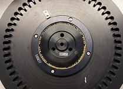
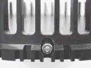

Replacing Wash Carousel Bearings
This procedure describes how to replace the wash carousel bearings.
Bearing failure can cause wash carousel errors. Failed bearings do not rotate smoothly.
- If the single bearing fails on a non-serviceable wash carousel, then replace the wash carousel.
- If a bearing fails on a serviceable wash carousel (carousel with replaceable bearings), replace the bearings and o-rings.
| Qty | Description | |
|---|---|---|
| 1 | Carousel (Wheel) with Bearings, Wash | |
|
 Non-Serviceable |
 Serviceable |
|
| 6 | Bearing, Vertical or Horizontal, Wash Carousel | |
| 3 | O-ring, Reddish, Silicone, Inner Bearing Retainer (ONLY), Wash Carousel (Wheel) | |
| 3 | Retainer, E-Clip, Wash Carousel Bearing | |
| 3 | Pin, Bearing Mounting, Serviceable Wash Carousel | |
| 3 | Screw, Button head 8-32x1/4 inch
Warning: Do not use the horizontal bearing retaining screw from a non-serviceable wash carousel on a serviceable wash carousel.
|
|